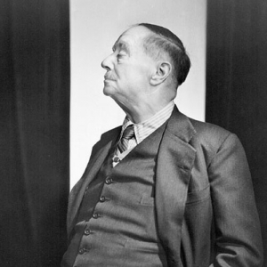
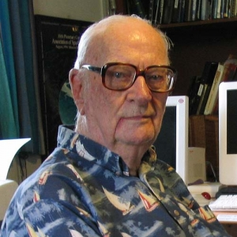
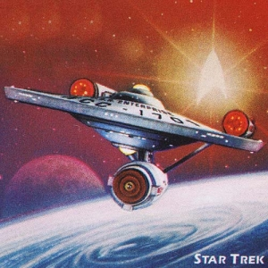

[roh-bot-iks]
while the noun robotics is commonplace today, it wasn't back in the 1941 when sci-fi writer issas asimov coined the term in a short story published in astounding science fiction. it took another 20 years before the term really took off, and by the 1980s, robotics had firmly planted itself in the english language. the term robot entered english in 1923 from a translation of karel capek's 1920 play called rossum's universal robots. it came to english from czech base robot-, as found in the words robota meaning "compulsory labor" and robotnik meaning "worker".
While time travel has been considered since as early as The Mahabharata, H. G. Wells gave the English language much-used terminology on the subject. In 1894 Wells coined terms related to time travel such as time travelling and time traveller in his story with the heading "Time Travelling: Possibility or Paradox." A year later, in his novella The Time Machine, Wells explores time travel in more detail as an unnamed protagonist moves backwards and forwards in time, encountering the mythical species of the Eloi and the Morlocks on his way.
zero gravity was coined by author c.clarke in sands of mars, his first science-fiction novel. a year later, he coined the term zero g, where g is short for "gravity", in his novel islands in the sky. zero gravity is the condition in which the apparent effect of gravity is zero, and objects float if they aren't tied down to something larger and more sturdy, like the wall of a spaceship. this concept of zero g became official terminology of astronauts as the space race accelerated in the 1960s, and today, it's viewed more as a science term then a sci-fi term.
if you are travelling in a spacecraft at a speed faster than light, you're moving at warp speed. the word warp comes from the old english wearp which refers to threads running over fabric. in the 20th century, it became popular to conceptualize space and its relation to time as a fabric. the first usage of warp in relation to speed was in a 1968 star trek script, "all our yesterdays." since its debut in english, warp speed has taken on metaphorical senses outside the realm of space.
[nan-uh-tek-nol-uh-jee, ney-nuh]
nanites, or tiny robots built on small scale, were a concept first realized in science fiction and later researched by scientists in the hopes of making these minute robots a reality. sometimes called nanomachines, nanorobots, or nanobots, these robots will one day have many real-life applications, including targeted drug delivery in patients with cancer. perhaps one of the first science fiction writers to imagine nanotechnology was nikolai leskov, whose 1881 story described imperceptible robots, requiring 5,000,000 times magnification to be seen.